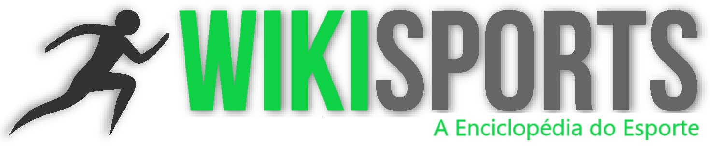

WikiSports
A "Enciclopédia" do Esporte
Atletismo
Badminton
Basquete
Beisebal
Boxe
Canoagem
Ciclismo
Críquete
Croquet
Curling
Esgrima
Esqui
Futebol
Ginástica Artística
Ginástica Rítmica
Ginástica de Trampolim
Golfe
Halterofilismo
Handebol
Hipismo
Hóquei no Gelo
Hóquei sobre Grama
Jeu de Paume
Judô
Lacrosse
Luge
Luta Olímpica
Nado Sincronizado
Natação
Patinação
Pelota Basca
Pentatlo Moderno
Pólo
Pólo Aquático
Remo
Rugby
Saltos Ornamentais
Skeleton
Snowboard
Taekwondo
Tênis
Tênis de Mesa
Tiro
Tiro com Arco
Vela
Voleibol
WikiSports é um site de esportes desenvolvido pelos alunos do Instituto Federal de Educação, Ciência e Tecnologia - Campus Cubatão. O site tem por objetivo... O conteúdo é administrado por... Confira!